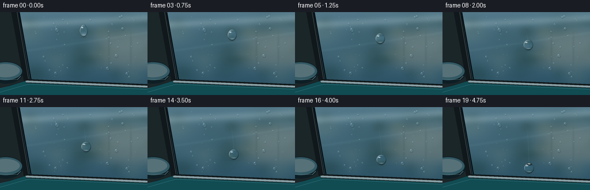
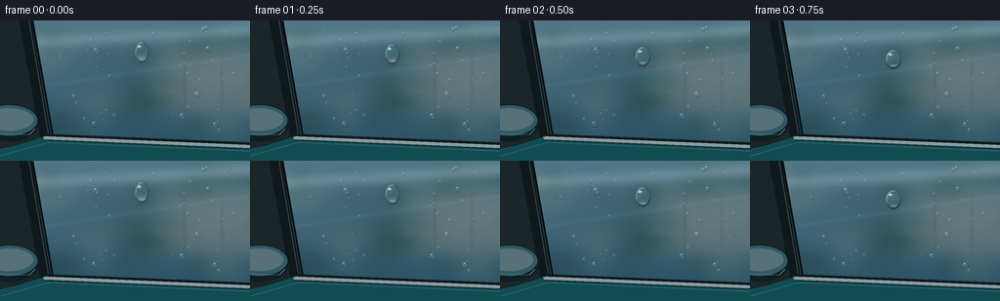

CODING AGENTS AS PIXEL WORLD MODELS
traex/GPT-6.1-Sol · mechanics_0050
点击播放 · 原生 RGB 像素
逐轮保存的候选
回放视频、检查图与代码变化。
每份候选均可单独播放。实际图片检查记录在下方工具轨迹中。
候选 01播放与检查图
点击播放 · 原生 RGB 像素


展开代码变化
--- 上一保存版本
+++ 本次保存版本
@@ -0,0 +1,136 @@
+from pathlib import Path
+import numpy as np
+from PIL import Image, ImageDraw, ImageFilter
+import artifact_io
+
+ROOT=Path(__file__).resolve().parent
+W,H,S=256,144,3
+w,h=W*S,H*S
+Y,X=np.mgrid[0:h,0:w].astype(np.float32); X/=S;Y/=S
+rng=np.random.default_rng(52)
+
+# Photographic, softly reflected outdoor scene seen on tinted side-window glass.
+base=np.zeros((h,w,3),np.float32)
+t=Y/H
+base[:]=np.stack([83-44*t,120-42*t,137-40*t],axis=-1)
+# Broad reflected sky and a softly defocused tree canopy.
+for j in range(47):
+ cx=rng.uniform(-30,300);cy=rng.uniform(18,112)
+ sx=rng.uniform(9,37);sy=rng.uniform(8,24)
+ a=np.exp(-((X-cx)/sx)**2-((Y-cy)/sy)**2)*rng.uniform(.05,.21)
+ color=np.array([24,54,47]) if j%3 else np.array([132,151,134])
+ base=base*(1-a[...,None])+color*a[...,None]
+# Unfocused warm wall and garage reflection to the right, with vertical forms.
+a=np.exp(-((X-227)/63)**4-((Y-64)/34)**4)*.32
+base=base*(1-a[...,None])+np.array([167,160,139])*a[...,None]
+for xx in (189,227,265):
+ a=np.exp(-((X-xx)/1.9)**2-((Y-64)/29)**4)*.12
+ base=base*(1-a[...,None])+np.array([45,62,64])*a[...,None]
+a=np.exp(-((Y-(24-.055*X))/7)**2)*.24
+base=base*(1-a[...,None])+np.array([184,209,214])*a[...,None]
+a=np.exp(-((Y-(74-.15*X))/2.2)**2)*.06
+base+=a[...,None]*np.array([80,88,85])
+# Very fine glass texture, subtle rather than snowy.
+noise=rng.normal(0,.34,(h,w,1));base=np.clip(base+noise,0,255)
+# Car geometry: graphite window pillars, rubber gasket, polished chrome sill,
+# and glossy blue-green door below it. Drawing in supersampled coordinates.
+im=Image.fromarray(base.astype(np.uint8))
+d=ImageDraw.Draw(im)
+def poly(points,c): d.polygon([(int(x*S),int(y*S)) for x,y in points], fill=c)
+def line(points,c,width=1): d.line([(int(x*S),int(y*S)) for x,y in points],fill=c,width=max(1,int(width*S)))
+poly([(0,0),(32,0),(52,119),(0,132)],(16,24,28))
+poly([(0,0),(19,0),(41,120),(0,132)],(27,38,41))
+line([(29,-3),(50,120)],(59,71,73),1.1)
+line([(33,0),(54,120)],(6,15,20),2.3)
+poly([(0,133),(49,118),(256,127),(256,144),(0,144)],(17,76,83))
+poly([(43,116),(256,125),(256,132),(45,123)],(17,25,27))
+poly([(44,119),(256,128),(256,131),(45,122)],(132,156,162))
+line([(46,119),(256,128)],(216,229,230),.65)
+line([(47,122),(256,131)],(39,61,64),.7)
+line([(0,139),(49,125),(256,134)],(46,108,114),1.1)
+# A partly cropped side mirror anchors the close-up as a car window.
+d.ellipse((-20*S,86*S,40*S,124*S),fill=(13,30,36))
+d.ellipse((-19*S,87*S,38*S,118*S),fill=(51,89,100))
+d.ellipse((-16*S,90*S,34*S,113*S),fill=(87,113,120))
+line([(0,116),(30,117),(36,111)],(113,145,150),.8)
+# The surface reflection is kept crisp enough to make transparent drops visible.
+background=np.asarray(im).astype(np.float32)
+
+# Sample the reflected scene as a spherical drop would refract it.
+def sample(bg,x,y):
+ x=np.clip(x*S,0,w-1.001);y=np.clip(y*S,0,h-1.001)
+ ix=x.astype(int);iy=y.astype(int);fx=(x-ix)[...,None];fy=(y-iy)[...,None]
+ return bg[iy,ix]*(1-fx)*(1-fy)+bg[iy,ix+1]*fx*(1-fy)+bg[iy+1,ix]*(1-fx)*fy+bg[iy+1,ix+1]*fx*fy
+
+def drop(canvas,cx,cy,rx,ry,phase=0,taper=0,main=False):
+ x0=max(0,int((cx-rx-2)*S));x1=min(w,int((cx+rx+2)*S)+1)
+ y0=max(0,int((cy-ry-2)*S));y1=min(h,int((cy+ry+2)*S)+1)
+ xx=X[y0:y1,x0:x1];yy=Y[y0:y1,x0:x1]
+ v=(yy-cy)/ry
+ # Early drop has a narrow shoulder, relaxing into a circular cap.
+ width=1-taper*np.maximum(-v,0)
+ u=(xx-cx)/(rx*width)
+ rr=np.sqrt(u*u+v*v);inside=rr<1
+ z=np.sqrt(np.maximum(0,1-rr*rr))
+ # Transparent magnification and inversion in the thick central lens.
+ sx=cx-u*rx*(1.2+1.65*z)
+ sy=cy-v*ry*(1.2+1.65*z)+ry*.18
+ lens=sample(background,sx,sy)
+ orig=canvas[y0:y1,x0:x1].copy()
+ # Fresnel contribution and the lower dark edge of the water cap.
+ edge=np.clip((rr-.76)/.24,0,1)
+ lens=lens*(1-.20*edge[...,None])
+ shaded=(.82+.12*z-.13*np.clip(v,0,1))[...,None]
+ lens=lens*shaded+np.array([10,17,20])
+ # Sky reflected in the rounded shoulder (upper-left), road in lower rim.
+ upper=np.exp(-((rr-.85)/.065)**2)*np.clip((-u-v-.13)/1.25,0,1)
+ lens=lens*(1-upper[...,None]*.68)+np.array([218,239,241])*upper[...,None]*.68
+ lower=np.exp(-((rr-.90)/.07)**2)*np.clip((v+.35*u)/1.05,0,1)
+ lens*=1-.49*lower[...,None]
+ # A clean, small softbox-like highlight plus a focused glint.
+ highlight=np.exp(-((u+.36)/.20)**2-((v+.47)/.095)**2)
+ lens=lens*(1-highlight[...,None]*.90)+np.array([245,253,254])*highlight[...,None]*.90
+ pinpoint=np.exp(-((u+.49)/.061)**2-((v+.45)/.057)**2)
+ lens=lens*(1-pinpoint[...,None])+np.array([255,255,252])*pinpoint[...,None]
+ # Thin caustic under the lens: water, not an opaque pearl.
+ caustic=np.exp(-((u-.05)/.40)**2-((v-.64)/.085)**2)*.40
+ lens=lens*(1-caustic[...,None])+np.array([169,212,216])*caustic[...,None]
+ alpha=np.clip((1-rr)*S*min(rx,ry),0,1)*inside
+ canvas[y0:y1,x0:x1]=orig*(1-alpha[...,None])+lens*alpha[...,None]
+
+beads=[]
+for i in range(66):
+ cx=rng.uniform(56,252);cy=rng.uniform(3,119)
+ # An uncluttered band isolates the moving subject.
+ if 125<cx<167 and 14<cy<118:continue
+ r=rng.uniform(.65,2.2)
+ if i%14==0:r=3.15
+ beads.append((cx,cy,r,r*rng.uniform(1.0,1.15),rng.random()))
+# A few slightly larger drops nearby emphasize the freshly washed glass.
+beads.extend([(99,31,3.7,4.0,.2),(187,98,3.4,3.6,.7),(213,29,2.7,3.0,.5),(76,78,2.3,2.7,.6)])
+frames=[]
+for f in range(20):
+ t=f/19
+ canvas=background.copy()
+ # Main bead descends slowly, then accelerates as it overcomes surface adhesion.
+ cy=32+74*(.37*t+.63*t**1.45)
+ cx=145+6*t+1.15*np.sin(t*4.2)
+ relax=1-np.exp(-t*5.5)
+ rx=7.5+1.6*relax;ry=11.7-2.4*relax
+ # Thin transparent wet path, not a long solid cartoon tail.
+ if cy>36:
+ pathx=145+6*np.clip((Y-32)/74,0,1)+1.15*np.sin(np.clip((Y-32)/74,0,1)*4.2)
+ mask=np.exp(-((X-pathx)/.43)**2)*((Y>32)&(Y<cy-ry*.64))
+ fade=np.clip((Y-32)/max(cy-32,1),0,1)
+ canvas+=mask[...,None]*(.6+.8*fade[...,None])*np.array([8,11,12])
+ edge=np.exp(-((X-(pathx-.58))/.20)**2)*((Y>32)&(Y<cy-ry*.65))
+ canvas-=edge[...,None]*np.array([2,3,3])
+ for bead in beads: drop(canvas,*bead)
+ drop(canvas,cx,cy,rx,ry,t,taper=.25*(1-relax),main=True)
+ # Tiny lower contact shadow and caustic on the glass.
+ shadow=np.exp(-((X-cx-.2)/(rx*.72))**2-((Y-cy-ry-.55)/.45)**2)*.13
+ canvas*=1-shadow[...,None]
+ image=Image.fromarray(np.clip(canvas,0,255).astype(np.uint8)).resize((W,H),Image.Resampling.LANCZOS)
+ frames.append(np.array(image))
+artifact_io.save(np.stack(frames),ROOT)
+print('Saved 20 RGB frames, 256x144, 4 fps.')
可观测工具轨迹
实际执行的命令与返回图片。
命令 1exit 0
/bin/bash -lc 'ls -la && cat prompt.txt && cat GENERATION_RULES.md && cat task_spec.json'
命令 2exit 0
/bin/bash -lc "cat artifact_io.py && python - <<'PY'
import numpy,PIL
print('numpy/PIL ready')
PY"命令 3exit 0
/bin/bash -lc "cat > generate.py <<'PY'
from pathlib import Path
import numpy as np
from PIL import Image, ImageDraw, ImageFilter
import artifact_io
ROOT=Path(__file__).resolve().parent
W,H,S=256,144,3
w,h=W*S,H*S
Y,X=np.mgrid[0:h,0:w].astype(np.float32); X/=S;Y/=S
rng=np.random.default_rng(52)
# Photographic, softly reflected outdoor scene seen on tinted side-window glass.
base=np.zeros((h,w,3),np.float32)
t=Y/H
base[:]=np.stack([83-44*t,120-42*t,137-40*t],axis=-1)
# Broad reflected sky and a softly defocused tree canopy.
for j in range(47):
cx=rng.uniform(-30,300);cy=rng.uniform(18,112)
sx=rng.uniform(9,37);sy=rng.uniform(8,24)
a=np.exp(-((X-cx)/sx)**2-((Y-cy)/sy)**2)*rng.uniform(.05,.21)
color=np.array([24,54,47]) if j%3 else np.array([132,151,134])
base=base*(1-a[...,None])+color*a[...,None]
# Unfocused warm wall and garage reflection to the right, with vertical forms.
a=np.exp(-((X-227)/63)**4-((Y-64)/34)**4)*.32
base=base*(1-a[...,None])+np.array([167,160,139])*a[...,None]
for xx in (189,227,265):
a=np.exp(-((X-xx)/1.9)**2-((Y-64)/29)**4)*.12
base=base*(1-a[...,None])+np.array([45,62,64])*a[...,None]
a=np.exp(-((Y-(24-.055*X))/7)**2)*.24
base=base*(1-a[...,None])+np.array([184,209,214])*a[...,None]
a=np.exp(-((Y-(74-.15*X))/2.2)**2)*.06
base+=a[...,None]*np.array([80,88,85])
# Very fine glass texture, subtle rather than snowy.
noise=rng.normal(0,.34,(h,w,1));base=np.clip(base+noise,0,255)
# Car geometry: graphite window pillars, rubber gasket, polished chrome sill,
# and glossy blue-green door below it. Drawing in supersampled coordinates.
im=Image.fromarray(base.astype(np.uint8))
d=ImageDraw.Draw(im)
def poly(points,c): d.polygon([(int(x*S),int(y*S)) for x,y in points], fill=c)
def line(points,c,width=1): d.line([(int(x*S),int(y*S)) for x,y in points],fill=c,width=max(1,int(width*S)))
poly([(0,0),(32,0),(52,119),(0,132)],(16,24,28))
poly([(0,0),(19,0),(41,120),(0,132)],(27,38,41))
line([(29,-3),(50,120)],(59,71,73),1.1)
line([(33,0),(54,120)],(6,15,20),2.3)
poly([(0,133),(49,118),(256,127),(256,144),(0,144)],(17,76,83))
poly([(43,116),(256,125),(256,132),(45,123)],(17,25,27))
poly([(44,119),(256,128),(256,131),(45,122)],(132,156,162))
line([(46,119),(256,128)],(216,229,230),.65)
line([(47,122),(256,131)],(39,61,64),.7)
line([(0,139),(49,125),(256,134)],(46,108,114),1.1)
# A partly cropped side mirror anchors the close-up as a car window.
d.ellipse((-20*S,86*S,40*S,124*S),fill=(13,30,36))
d.ellipse((-19*S,87*S,38*S,118*S),fill=(51,89,100))
d.ellipse((-16*S,90*S,34*S,113*S),fill=(87,113,120))
line([(0,116),(30,117),(36,111)],(113,145,150),.8)
# The surface reflection is kept crisp enough to make transparent drops visible.
background=np.asarray(im).astype(np.float32)
# Sample the reflected scene as a spherical drop would refract it.
def sample(bg,x,y):
x=np.clip(x*S,0,w-1.001);y=np.clip(y*S,0,h-1.001)
ix=x.astype(int);iy=y.astype(int);fx=(x-ix)[...,None];fy=(y-iy)[...,None]
return bg[iy,ix]*(1-fx)*(1-fy)+bg[iy,ix+1]*fx*(1-fy)+bg[iy+1,ix]*(1-fx)*fy+bg[iy+1,ix+1]*fx*fy
def drop(canvas,cx,cy,rx,ry,phase=0,taper=0,main=False):
x0=max(0,int((cx-rx-2)*S));x1=min(w,int((cx+rx+2)*S)+1)
y0=max(0,int((cy-ry-2)*S));y1=min(h,int((cy+ry+2)*S)+1)
xx=X[y0:y1,x0:x1];yy=Y[y0:y1,x0:x1]
v=(yy-cy)/ry
# Early drop has a narrow shoulder, relaxing into a circular cap.
width=1-taper*np.maximum(-v,0)
u=(xx-cx)/(rx*width)
rr=np.sqrt(u*u+v*v);inside=rr<1
z=np.sqrt(np.maximum(0,1-rr*rr))
# Transparent magnification and inversion in the thick central lens.
sx=cx-u*rx*(1.2+1.65*z)
sy=cy-v*ry*(1.2+1.65*z)+ry*.18
lens=sample(background,sx,sy)
orig=canvas[y0:y1,x0:x1].copy()
# Fresnel contribution and the lower dark edge of the water cap.
edge=np.clip((rr-.76)/.24,0,1)
lens=lens*(1-.20*edge[...,None])
shaded=(.82+.12*z-.13*np.clip(v,0,1))[...,None]
lens=lens*shaded+np.array([10,17,20])
# Sky reflected in the rounded shoulder (upper-left), road in lower rim.
upper=np.exp(-((rr-.85)/.065)**2)*np.clip((-u-v-.13)/1.25,0,1)
lens=lens*(1-upper[...,None]*.68)+np.array([218,239,241])*upper[...,None]*.68
lower=np.exp(-((rr-.90)/.07)**2)*np.clip((v+.35*u)/1.05,0,1)
lens*=1-.49*lower[...,None]
# A clean, small softbox-like highlight plus a focused glint.
highlight=np.exp(-((u+.36)/.20)**2-((v+.47)/.095)**2)
lens=lens*(1-highlight[...,None]*.90)+np.array([245,253,254])*highlight[...,None]*.90
pinpoint=np.exp(-((u+.49)/.061)**2-((v+.45)/.057)**2)
lens=lens*(1-pinpoint[...,None])+np.array([255,255,252])*pinpoint[...,None]
# Thin caustic under the lens: water, not an opaque pearl.
caustic=np.exp(-((u-.05)/.40)**2-((v-.64)/.085)**2)*.40
lens=lens*(1-caustic[...,None])+np.array([169,212,216])*caustic[...,None]
alpha=np.clip((1-rr)*S*min(rx,ry),0,1)*inside
canvas[y0:y1,x0:x1]=orig*(1-alpha[...,None])+lens*alpha[...,None]
beads=[]
for i in range(66):
cx=rng.uniform(56,252);cy=rng.uniform(3,119)
# An uncluttered band isolates the moving subject.
if 125<cx<167 and 14<cy<118:continue
r=rng.uniform(.65,2.2)
if i%14==0:r=3.15
beads.append((cx,cy,r,r*rng.uniform(1.0,1.15),rng.random()))
# A few slightly larger drops nearby emphasize the freshly washed glass.
beads.extend([(99,31,3.7,4.0,.2),(187,98,3.4,3.6,.7),(213,29,2.7,3.0,.5),(76,78,2.3,2.7,.6)])
frames=[]
for f in range(20):
t=f/19
canvas=background.copy()
# Main bead descends slowly, then accelerates as it overcomes surface adhesion.
cy=32+74*(.37*t+.63*t**1.45)
cx=145+6*t+1.15*np.sin(t*4.2)
relax=1-np.exp(-t*5.5)
rx=7.5+1.6*relax;ry=11.7-2.4*relax
# Thin transparent wet path, not a long solid cartoon tail.
if cy>36:
pathx=145+6*np.clip((Y-32)/74,0,1)+1.15*np.sin(np.clip((Y-32)/74,0,1)*4.2)
mask=np.exp(-((X-pathx)/.43)**2)*((Y>32)&(Y<cy-ry*.64))
fade=np.clip((Y-32)/max(cy-32,1),0,1)
canvas+=mask[...,None]*(.6+.8*fade[...,None])*np.array([8,11,12])
edge=np.exp(-((X-(pathx-.58))/.20)**2)*((Y>32)&(Y<cy-ry*.65))
canvas-=edge[...,None]*np.array([2,3,3])
for bead in beads: drop(canvas,*bead)
drop(canvas,cx,cy,rx,ry,t,taper=.25*(1-relax),main=True)
# Tiny lower contact shadow and caustic on the glass.
shadow=np.exp(-((X-cx-.2)/(rx*.72))**2-((Y-cy-ry-.55)/.45)**2)*.13
canvas*=1-shadow[...,None]
image=Image.fromarray(np.clip(canvas,0,255).astype(np.uint8)).resize((W,H),Image.Resampling.LANCZOS)
frames.append(np.array(image))
artifact_io.save(np.stack(frames),ROOT)
print('Saved 20 RGB frames, 256x144, 4 fps.')
PY
python generate.py"命令 4exit 2
/bin/bash -lc 'if command -v ffmpeg >/dev/null 2>&1; then ffmpeg -hide_banner -loglevel error -y -framerate 4 -i frames/%02d.png -c:v libx264 -crf 17 -pix_fmt yuv420p -movflags +faststart video.mp4; fi ls -lh pixels.npz index.html inspection.png video.mp4 2>/dev/null'
视觉工具实际返回图片 1

保存候选 1 份；完成命令 4 次；可验证图片返回 1 张。原始 API 响应与完整日志保留在本地。